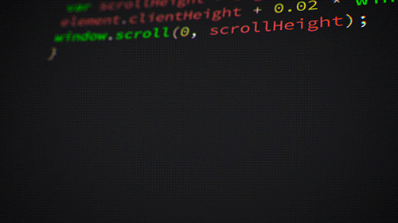
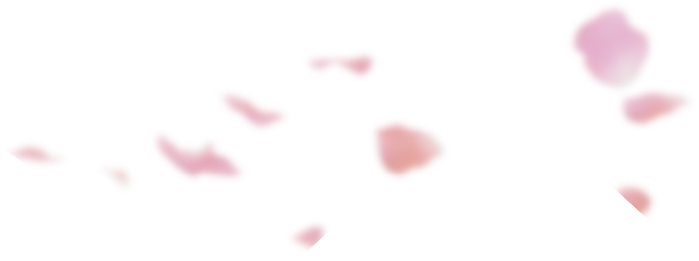
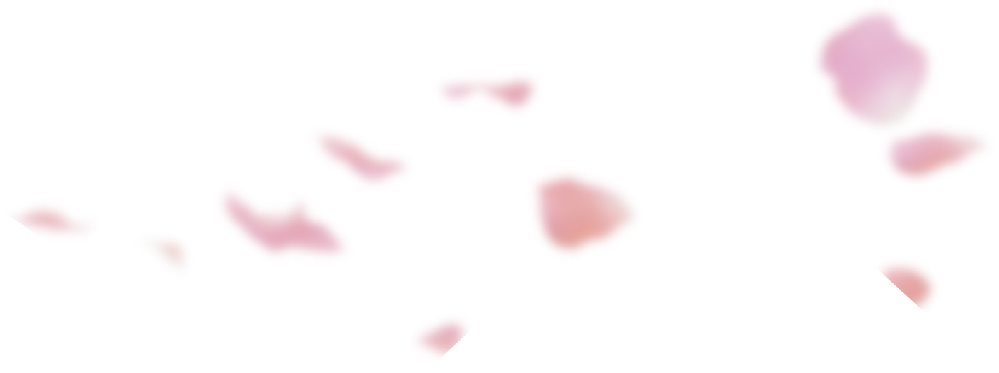
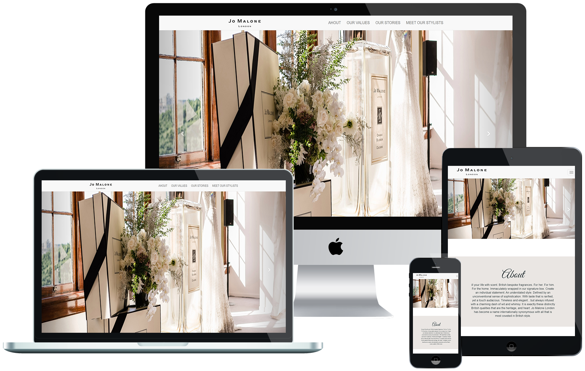
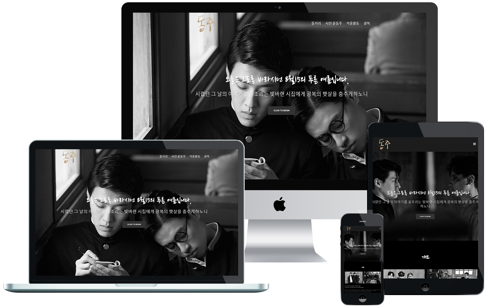

본문 콘텐츠영역
HOME
- JIN HYEON JU
- WEB PUBLISHER & FRONT END DEVELOPMENT
- HOME
PORT FOLIO

 

PROFILE
- JIN HYEON JU
- WEB PUBLISHER & FRONT END DEVELOPMENT
- 01. PROFILE

- portfolio
- 진현주(JIN HYEON JU)
- WEB PUBLISHER
FRONT END DEVELOPMENT
- Birth.
- 1988. 07 .18
- Call.
- 010 - 9258 - 4055
- Email.
- naby880718@naver.com
- Kakao Talk.
- naby880718
- Skills(Develop)
- HTML5, CSS3, CSS전처리기(LESS/SASS), JavaScript, jQuery, 비동기처리(JSON/AJAX), 반응형 Framework(Bootstrap), CMS(WordPress), PHP, MySql, github, MS Office
- Skills(Design)
- Adobe Photoshop
- JIN HYEON JU
- WEB PUBLISHER & FRONT END DEVELOPMENT
- 02. PC WEB

(주)유한양행 DESKTOP
웹사이트 제작
기존사이트를 html5/css3를 사용하여 트렌드를 반영한 디자인으로 새롭게 구현하였습니다. 이미지로 표현되어있던 텍스트를 모두 변환하고 누락된 alt 속성을 채워, 웹표준을 준수하고 접근성을 높이는 방식으로 개선하였습니다.
- 제작기간
- 2021.06.01 - 06.30 (약 4주)
- 제작스킬
- HTML5, CSS3, JavaScript, jQuery, JSON, AJAX, PHP, MySql, Adobe Photoshop, illustrator, W3C 웹표준 마크업 검사, 웹접근성검사(K-WAH), 크로스브라우징 완료
- JIN HYEON JU
- WEB PUBLISHER & FRONT END DEVELOPMENT
- 03. MOBILE WEB


(주)유한양행 MOBILE
웹사이트 제작
PC용으로 구현된 기업형 (주)유한양행 웹사이트를 모바일 기기에 적합한 UI를 적용하여 새롭게 구현한 모바일용 웹입니다. 마우스가 아닌 사용자의 터치 이벤트를 중점적으로 제작하였습니다.
- 제작기간
- 2021.07.01 - 07.23 (약 3주)
- 제작스킬
- HTML5, CSS3, JavaScript, jQuery, MySql, CSS3(media query), Adobe Photoshop, illustrator, W3C 웹표준 마크업 검사, 웹접근성검사(K-WAH), 대표 기기별 테스트 완료
- JIN HYEON JU
- WEB PUBLISHER & FRONT END DEVELOPMENT
- 04. RESPONSIVE

Guardians of the Galaxy
반응형
Guardians of the Galaxy 영화를 주제로 동영상과 이미지 등 시각적인 부분을 강조하여, 다양한 디바이스에서 맞춤형 해상도를 경험할 수 있는 반응형 웹을 구현하였습니다.
- 제작기간
- 2021.07.24 ~ 08.06(약 2주)
- 제작스킬
- HTML5, CSS3(media query), JavaScript, jQuery를 이용한 디바이스/해상도별 반응형 UI 구현, Adobe Photoshop, W3C 웹표준 마크업 검사, 웹접근성검사(K-WAH), 대표 기기별 테스트 완료
- JIN HYEON JU
- WEB PUBLISHER & FRONT END DEVELOPMENT
- 05. BOOTSTRAP

JO MALONE LONDON
BOOTSTRAP
부트스트랩을 이용하여 보다 간편하게, JO MALONE LONDON BOOTSTRAP를 구현한 웹사이트 입니다.
- 제작기간
- 2021.08.09 - 08.11(약 3일)
- 제작스킬
- Bootstrap을 이용한 웹사이트 구현
HTML5, CSS3(media query)와 Javascript, jQuery, BOOTSTRAP 프레임워크를 이용하여 디바이스 / 해상도 별 반응형 UI구현, >W3C 웹표준 마크업 검사, 웹접근성검사(K-WAH), 대표 기기별 테스트 완료
- JIN HYEON JU
- WEB PUBLISHER & FRONT END DEVELOPMENT
- 06. WORDPRESS

영화 <동주>
WORDPRESS
워드프레스의 테마와 플러그인을 사용하여 815 광복절을 맞아 영화 <동주>를 주제로 한 웹사이트를 구현했습니다.
- 제작기간
- 2021.08.16 - 08.19(약 3일)
- 제작스킬
- Wordpress를 이용한 웹사이트 구현
Wordpress 테마 'Sydney'와 플러그인(Elementor) 활용한 웹사이트 구현, Adobe Photoshop, W3C 웹표준 마크업 검사, 웹접근성검사(K-WAH), 대표 기기별 테스트 완료
END
- JIN HYEON JU
- WEB PUBLISHER & FRONT END DEVELOPMENT
- 07. END
" Thank you "